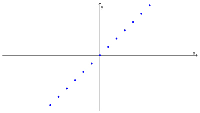
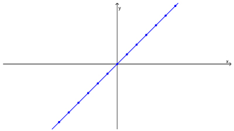
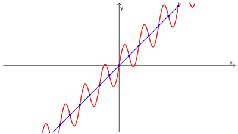

|

GUIA DO PROFESSOR
|
Caro professor, caso tenha algum questionamento de qualquer natureza, não hesite em nos contactar pelo e-mail: |
| DESCRIÇÃO |
|
Através do processo de modelagem matemática de um problema de otimização, esta atividade explora
os conceitos de domínio, imagem e gráfico de função.
O enunciado do problema é o seguinte:
“Considere pontos A, B, C, H e M no plano.
O ponto H pertence ao segmento de extremidades B e C, de modo
que a distância entre B e H é igual a |
| OBJETIVOS |
|
Estimular as conexões entre os aspectos algébrico, numérico, geométrico e verbal de uma função real; exercitar processos de modelagem matemática; exercitar os conceitos de domínio, imagem e gráfico de função. |
| QUANDO USAR? |
|
Sugerimos que a atividade seja usada quando da apresentação ou revisão das funções reais de uma variável. Pré-requisitos: distância entre pontos no plano, o Teorema de Pitágoras. |
| COMO USAR? | ||||||
|
Decidir como usar o computador é uma questão que depende de alguns fatores: número de alunos na turma, número de computadores disponíveis no laboratório de informática e tempo disponível em sala de aula. Em virtude disto, vamos sugerir três estratégias de uso desta atividade:
Principalmente nas modalidades 1 e 3, recomendamos fortemente que o aluno preencha algum tipo de questionário de acompanhamento, para avaliação posterior. Sugerimos o seguinte modelo (sinta-se livre para modificá-lo de acordo com suas necessidades): Este formulário de acompanhamento do aluno também estará acessível na página principal da atividade através do seguinte ícone: As respostas dos questionamentos propostos neste formulário não estão incluídas com a atividade, mas elas podem ser solicitadas através do e-mail conteudosdigitais@im.uff.br. |
| OBSERVAÇÕES METODOLÓGICAS |
|
Relatos de experiências (comprovados em nossos testes) mostram que
os alunos têm forte resistência em preencher o formulário de acompanhamento.
Mais ainda: estes relatos mostram que, frequentemente, os alunos conseguem
argumentar corretamente de forma verbal,
mas enfrentam dificuldades ao fazer o registro escrito de
suas ideias.
|
| OBSERVAÇÕES TÉCNICAS | ||||||||
|
A atividade pode ser acessada usando um navegador (Firefox 2+ ou Internet Explorer 7+), através do link
http://www.uff.br/cdme/pge/
(endereço alternativo: http://www.cdme.im-uff.mat.br/pge/).
Se você preferir, solicite que o responsável pelo laboratório da sua escola
instale a atividade para acesso offline, isto é, sem a necessidade de conexão
com a internet.
Vantagens deste esquema: (1) além de áreas de texto, este sistema de teclas amplia também figuras e aplicativos FLASH e (2) o sistema funciona para qualquer página da internet, mesmo para aquelas sem uma programação nativa de acessibilidade. |
| OBSERVAÇÃO CONCEITUAL |
|
Sugerimos fortemente que você alerte os seus alunos para o seguinte fato: desenhar alguns pontos do gráfico de uma função e, então, ligá-los com segmentos de reta ou uma curva desenhada à mão livre pode não produzir o gráfico correto. Por exemplo, considere os pontos do gráfico de uma função desenhados na figura abaixo. 
Uma pessoa desavisada poderia achar que a função em questão é uma função linear 
Contudo, existem infinitas funções cujos gráficos passam pelos mesmos pontos. A figura a seguir ilustra
o gráfico (em vermelho) de uma outra tal função  Assim, nos exercícios sugeridos para esta atividade, é importante ter discernimento para saber o que pode e o que não pode ser concluído tão somente a partir do desenho do gráfico de uma função ou quais hipóteses estão sendo assumidas implicitamente e que devem ser justificadas de alguma outra maneira. |
| OBSERVAÇÃO DE NATUREZA NUMÉRICA |
|
Como qualquer software numérico, o aplicativo desta atividade representa números reais usando apenas
um número finito de casas decimais. Por este motivo, o software não distingue números reais cuja
distância é menor do que uma certa precisão.
Por exemplo, se na Parte 2 da atividade você acrescentar a constante |
| QUESTÕES PARA DISCUSSÃO APÓS A REALIZAÇÃO DA ATIVIDADE |
|
Sugerimos fortemente que seja feita uma discussão com os alunos após a realização da tarefa. Se você optou por levá-los ao laboratório, isto pode ser feito no próprio laboratório, logo após o término da atividade. Se você optou por um exercício extraclasse, a discussão pode ser feita quando da devolução do questionário. Esta discussão pode incluir as diferentes estratégias de solução dos exercícios adotada por cada aluno, a comparação das respostas dos alunos, as dificuldades encontradas na realização dos exercícios, a ênfase em propriedades e resultados importantes, as informações suplementares, etc. |
| AVALIAÇÃO |
|
Como instrumento de avaliação, sugerimos que você peça para os alunos elaborarem um relatório descrevendo as perguntas e respostas apresentadas na discussão em sala de aula. Nesse relatório, o professor poderá avaliar as capacidades de compreensão, argumentação e organização do aluno. Recomendamos que o questionário preenchido durante a realização da atividade seja anexado ao relatório. |
| REFERÊNCIAS |
|
Adams, R. A.; Essex, C.
Calculus: Single Variable.
Prentice-Hall, 2009.
|
[Clique aqui para voltar para a página principal!]
|